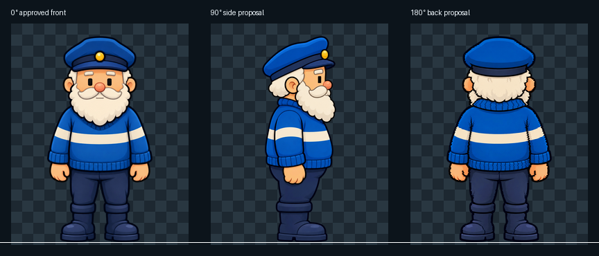
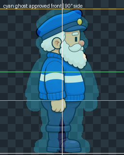
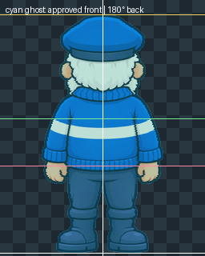
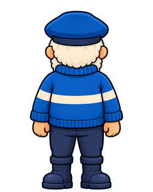

0° approved front

a9a5c37fe72221992ec499fa3096fdd0581977b4ac03ff7788da2af411107a2e
Prime Master V1 is permanently approved. V2 makes the proposed back alpha silhouette pixel-for-pixel identical to it. No animation or runtime sprite has been promoted.
a9a5c37fe72221992ec499fa3096fdd0581977b4ac03ff7788da2af411107a2e

d2171f148b6b14666a23198112aebf20e50048d583fda77ff0fc91f9d04d4f9a

c349f6095a83a429d491bfc8d7cdd619ea71ecec8196ba3a1e49d94a98a366f6
Absolute-match contract: every one of the 81,920 alpha values in the approved front and proposed back is identical. Their contour, occupied pixels, cap top, floor contact, centreline, widths and transparent gaps therefore match exactly.

The cyan ghost is the permanently approved front master; the full-colour figure is the proposed view.


| View | Opaque bounds | centre X | cap top | floor |
|---|---|---|---|---|
| approvedFront | [52, 18, 204, 316] | 128.0 | 18 | 316 |
| sideRight90 | [74, 18, 181, 316] | 127.5 | 18 | 316 |
| back180 | [52, 18, 204, 316] | 128.0 | 18 | 316 |
White vertical: identity axis. Yellow: cap top. Green: head/shoulder transition. Pink: waist. White horizontal: floor.
| source y | front width | side width | back width | back Δ width | back Δ centre |
|---|---|---|---|---|---|
| 45 | 106 | 83 | 106 | +0 | +0.0 |
| 80 | 104 | 82 | 104 | +0 | +0.0 |
| 120 | 92 | 86 | 92 | +0 | +0.0 |
| 150 | 129 | 87 | 129 | +0 | +0.0 |
| 165 | 140 | 95 | 140 | +0 | +0.0 |
| 185 | 150 | 99 | 150 | +0 | +0.0 |
| 205 | 145 | 92 | 145 | +0 | +0.0 |
| 225 | 136 | 66 | 136 | +0 | +0.0 |
| 250 | 84 | 50 | 84 | +0 | +0.0 |
| 275 | 81 | 44 | 81 | +0 | +0.0 |
| 300 | 113 | 70 | 113 | +0 | +0.0 |
| 315 | 100 | 57 | 100 | +0 | +0.0 |
Every back width and centre delta is exactly zero. The verifier separately compares the complete 256×320 alpha channels byte for byte. The side narrows intentionally because it represents body depth.

Retained as immutable provenance. It is not the active candidate because its silhouette only approximated the front.
Only the V2 back needs a new verdict; the 90° side is byte-identical to V1. Approval establishes review endpoints only and does not promote any runtime sprite or animation.